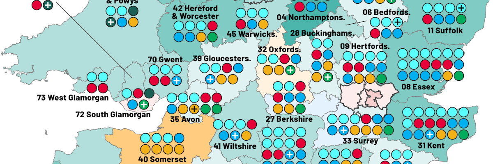

Projects

Euro Elo Rankings: an Elo ranking system for European football clubs
Euro Elo Rankings aims to produce a ranking of European football clubs in UEFA competitions over various seasons

D'Hondt apportionment for multi-member constituencies: an alternative electoral system for the UK
An insight into a much more proportional electoral system for general elections in the UK